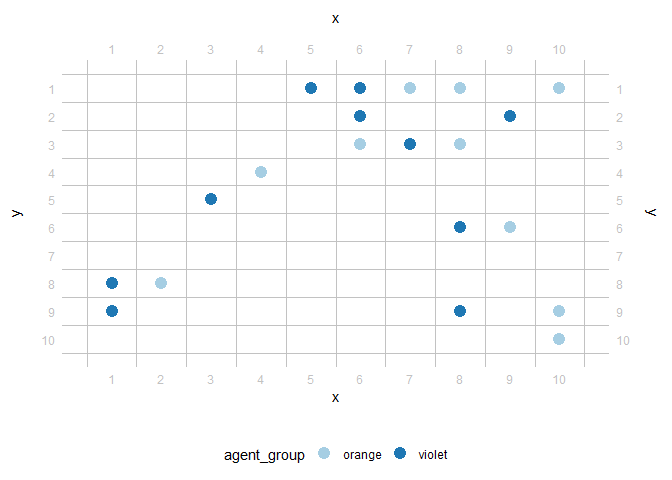
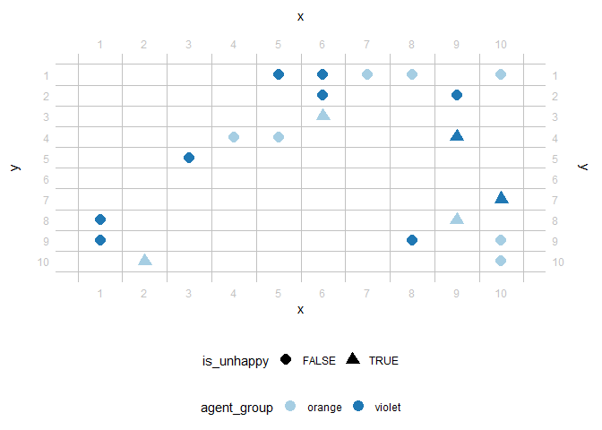
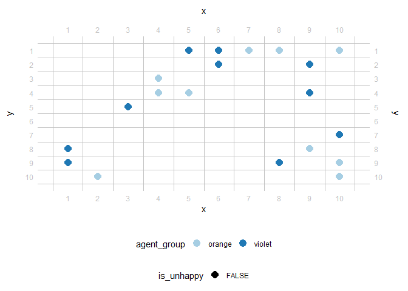

tidyABM is designed to streamline the process of setting up, running, and documenting Agent-Based Models (ABM) using the principles of tidy data. It thus allows researchers to easily organize, manipulate, and visualize ABMs in a structured, coherent, and intuitive manner, built on tidyverse conventions to efficiently build and explore ABMs while ensuring readability, reproducibility, and transparency.
Installation
Currently, you can only install the development version of tidyABM like so:
remotes::install_github('datenfruehstueck/tidyabm')Usage
At its core, tidyABM is organized into environments and agents. Both can have characteristics (specified constants), variables (flexible attributions), and rules (planned actions). Once set up, many agents can be added to an environment which can then be simulated. Simulations work over time where, for every tick (i.e., one point in time), variables and rules for agents and the overall environment are being evaluated.
To get started, we set up a grid environment (i.e., a 2D rectangle). In that, we also have to set/document the seed as random-number generation is quite a common thing to do with ABMs.
library(tidyabm)
e <- create_grid_environment(seed = 826347,
x = 10,
y = 10)Next, we create two kinds of agents, the orange ones and the violet ones. We (or, more specifically: they) enjoy neighborhoods where there are similar agents. Specifically, they get unhappy if not one of their four direct neighbors is similar to themselves. As such, they tend to check their hood and, if there’s not enough similarity, move to other places.
agent_o <- create_agent() %>%
set_characteristic(agent_group = 'orange') %>%
add_variable(is_unhappy = function(me, abm) {
neighbors <- grid_get_neighbors(me, abm, which = '+')
if (nrow(neighbors) == 0) {
return(FALSE)
} else {
return(sum(neighbors$agent_group == me$agent_group) == 0)
}
}) %>%
add_rule('move',
is_unhappy == TRUE,
.consequence = function(me, abm) {
spot <- grid_get_free_neighboring_spots(me, abm) %>%
dplyr::slice_sample(n = 1)
grid_move(me, abm,
new_x = spot$.x,
new_y = spot$.y) %>%
return()
})
agent_v <- agent_o %>%
set_characteristic(agent_group = 'violet',
.overwrite = TRUE)
#> Warning: The following characteristics already existed. They were overwritten:
#> agent_groupNow let’s add those agents to our environment. We want several orange and several violet ones. In fact, we’d like ten each. By default, they are thereby randomly distributed across our grid environment.
e <- e %>%
add_agents(agent_o,
n = 10) %>%
add_agents(agent_v,
n = 10)Finally, we need to tell the environment when to stop. Ideally, this would be the case when every agent is happy. If that’s not really possible, we stop the simulation after 50 iterations (see below) at the latest and see where it took us.
e <- e %>%
add_variable(share_unhappy = function(me, abm) {
abm %>%
convert_agents_to_tibble() %>%
dplyr::summarise(share_unhappy = sum(is_unhappy)/dplyr::n()) %>%
dplyr::pull(share_unhappy) %>%
return()
}) %>%
add_rule('stop when all are happy',
share_unhappy <= 0,
.consequence = stop_abm)Now we can initialize the environment and look at the seminal distribution of agents.

Next, let’s run the simulation. We can simply run one iteration (i.e., one tick).
Or, we can iterate the whole thing. In this case, iteration starts at the second tick as we have already manually just done the first one. The iteration step takes a while. We get some status messages in between. If we also want to take a look at the visual development, we can tell tidyABM to also visualize each iteration.
e <- e %>%
iterate(max_iterations = 30,
visualize = TRUE,
color = agent_group,
shape = is_unhappy)
#> [1] "Tick 2 finished in 0.366 secs:"
#> [1] " share_unhappy: 0.25"
#> [1] "Tick 3 finished in 0.285 secs:"
#> [1] " share_unhappy: 0.05"#> [1] "Tick 4 finished in 0.291 secs:"
#> [1] " share_unhappy: 0.05"#> [1] "Tick 5 finished in 0.31 secs:"
#> [1] " share_unhappy: 0"
When it’s done, tidyABM provides us with statistics about each iteration. Oh, and since it’s a tidy package, of course these statistics come in the form of tibbles. And they include some meta information as well.
e
#> # A tibble: 5 × 5
#> .tick .runtime .n_agents_after_tick .finished_after_tick share_unhappy
#> * <dbl> <drtn> <int> <lgl> <dbl>
#> 1 1 0.4980071 secs 20 FALSE 0.3
#> 2 2 0.3659480 secs 20 FALSE 0.25
#> 3 3 0.2851899 secs 20 FALSE 0.05
#> 4 4 0.2908959 secs 20 FALSE 0.05
#> 5 5 0.3095770 secs 20 TRUE 0
#> # ABM grid environment
#> * 10x10, 20 agents
#> * 0 environment characteristic(s),
#> * 1 environment variable(s),
#> * 1 environment rule(s),
#> * ended after 5 ticksWe can also take a look at all the agents (not only the two blueprints from the beginning but all of the added ones), also in a tidy format.
e %>%
convert_agents_to_tibble()
#> # A tibble: 20 × 5
#> .id agent_group .x .y is_unhappy
#> <chr> <chr> <dbl> <dbl> <lgl>
#> 1 A1 orange 10 9 FALSE
#> 2 A2 orange 8 1 FALSE
#> 3 A3 orange 4 4 FALSE
#> 4 A4 orange 5 4 FALSE
#> 5 A5 orange 2 10 FALSE
#> 6 A6 orange 10 10 FALSE
#> 7 A7 orange 10 1 FALSE
#> 8 A8 orange 9 8 FALSE
#> 9 A9 orange 4 3 FALSE
#> 10 A10 orange 7 1 FALSE
#> 11 A11 violet 9 2 FALSE
#> 12 A12 violet 8 9 FALSE
#> 13 A13 violet 3 5 FALSE
#> 14 A14 violet 10 7 FALSE
#> 15 A15 violet 6 1 FALSE
#> 16 A16 violet 5 1 FALSE
#> 17 A17 violet 9 4 FALSE
#> 18 A18 violet 1 8 FALSE
#> 19 A19 violet 6 2 FALSE
#> 20 A20 violet 1 9 FALSEThere’s of course more to explore and the possibilities are huge, particularly with the flexible triangle of characteristics, variables, and rules. For example, tidyABM is not only capable of handling grid environments but also others and each environment comes with their own helping utilities to inform variables and rules. Also, tidyABM can help write-up your ODD protocols. And it comes with quite a few vignettes for common ABM introductory simulations such as Schelling’s seggregation we kind-of looked into here.
browseVignettes('tidyabm')Issues and Citation
Feel free to contribute to this package, either by providing feedback (via the issues) or by providing code (via the pull requests).
If you use this package I would appreciate you citing it, for example like so:
Haim, Mario (2023). tidyABM: Set up, run, and document agent-based models (ABM) the tidy way. Source code and releases available at https://github.com/datenfruehstueck/tidyABM/.